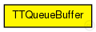
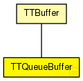

This documentation is released under the Creative Commons license
This documentation is released under the Creative Commons licenseRepresents a queue buffer for time-triggered traffic. Messages are sent using the configured send window.
The buffer stores infinit messages in a fifo queue. The buffer removes and sends the first message in the queue.
Author: Till Steinbach
The following diagram shows usage relationships between types. Unresolved types are missing from the diagram. Click here to see the full picture.
The following diagram shows inheritance relationships for this type. Unresolved types are missing from the diagram. Click here to see the full picture.
| Name | Type | Description |
|---|---|---|
| TTBuffer | simple module |
Represents an abstract Buffer for time-triggerd traffic. Messages are sent using the configured send window. |
| Name | Type | Default value | Description |
|---|---|---|---|
| destination_gates | string | "" |
Priority of the buffer (currently only used for rate-constrained traffic) int priority=default(-1); Critical traffic ID of the buffer int ct_id=default(0); Critical traffic marker of the buffer int ct_marker=default(0); Critical traffic mask of the buffer int ct_mask=default(0); Comma seperated list of gates where the frames of the buffer are delivered |
| priority | int | -1 |
Priority of the buffer (currently only used for rate-constrained traffic) |
| ct_id | int | 0 |
Critical traffic ID of the buffer |
| ct_marker | int | 0 |
Critical traffic marker of the buffer |
| ct_mask | int | 0 |
Critical traffic mask of the buffer |
| sendWindowStart | int | 0 |
Beginning of the send window in number of ticks (Changes to this parameter will get active for future scheduled frames only) |
| sendWindowEnd | int | 0 |
End of the send window in number of ticks |
| size | int | -1 |
Size of the buffer negative means infinite |
| drop_new | bool | false |
Dropping policy, Should the newest frame instead of the oldest frame be dropped when the buffer is full (see size parameter) |
| Name | Value | Description |
|---|---|---|
| display | q=frames | |
| class | TTQueueBuffer |
TTQueueBuffer is implemented by the TTQueueBuffer C++ Class |
| Name | Direction | Size | Description |
|---|---|---|---|
| in | input |
The buffers Input |
|
| out | output |
The buffers Output WARNING: CURRENTLY NOT USED! |
|
| schedulerIn | input |
Input gate for the incoming SchedulerActionTimeEvent messages |
| Name | Title | Source | Record | Unit | Interpolation Mode |
|---|---|---|---|---|---|
| queueLength | Queue Length | vector | sample-hold | ||
| ctDropped | CT dropped | sum |
// // Represents a queue buffer for time-triggered traffic. Messages are sent using the configured // send window. // // The buffer stores infinit messages in a fifo queue. // The buffer removes and sends the first message in the queue. // // @see TTBuffer, Buffer, // // @author Till Steinbach simple TTQueueBuffer extends TTBuffer { parameters: //TTQueueBuffer is implemented by the TTQueueBuffer C++ Class @class(TTQueueBuffer); @display("q=frames"); //Statistic of the queue length of the buffer @statistic[queueLength](title="Queue Length"; record=vector; interpolationmode=sample-hold); //Statistic of the amount of packets that were dropped due to buffer overflows @statistic[ctDropped](title="CT dropped"; record=sum); //Size of the buffer negative means infinite int size = default(-1); //Dropping policy, Should the newest frame instead of the oldest frame be dropped when the buffer is full (see size parameter) bool drop_new = default(false); }
This documentation is released under the Creative Commons license